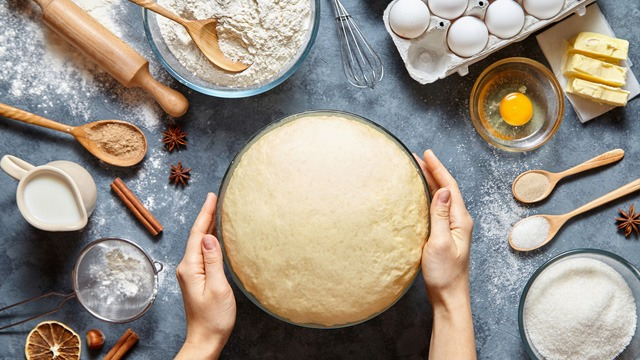

Why Baking is My Passion
Baking is a relaxing and rewarding hobby that allows me to express my creativity. I love the process of taking simple ingredients like flour, eggs, and sugar, and transforming them into something special that I can share with my friends and family at NMSU.
My Favorite Things to Bake
Over the years, I have practiced many recipes, but these four are my absolute favorites to prepare and share with others:
- Cheesecake (Pay de Queso): A creamy, classic dessert that is always a hit at any gathering.
- Chocolate Muffins: The perfect quick treat for whenever I have a sweet craving.
- Gorditas de Nata: A very traditional Mexican pastry that reminds me of home and family gatherings.
Baking in Action

The Preparation Process

Baking and Engineering
Believe it or not, baking has a lot in common with ICT Engineering. Both fields require following precise instructions, troubleshooting when results aren't as expected, and paying close attention to every small detail to ensure success.
If you are interested in starting your own baking journey, I highly recommend exploring these professional resources:
Explore Professional Recipes